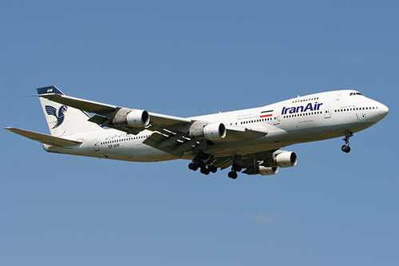

Szerokokadłubowy samolot pasażerski przeznaczony do lotów dalekiego zasięgu, produkowany przez Boeing Company, potocznie nazywany Jumbo Jet – ustępując Airbusowi A380 i An-225 jest jednym z największych samolotów odrzutowych na świecie, mogącym zabrać na pokład, w zależności od wersji i konfiguracji, od 366 do 660 pasażerów. Istnieją także wersje towarowe, oraz wersje półpasażerskie zabierające duży ładunek i 220 pasażerów. Jest to samolot czterosilnikowy (certyfikowany do lotu – w razie awarii – na tylko trzech silnikach), a jego cechą charakterystyczną jest "garb", w którym mieści się górny pokład samolotu.
Pierwszy lot Boeinga 747 odbył się 9 lutego 1969 roku, a wprowadzony został do służby w 1970 na amerykańskich liniach Pan Am. Do grudnia 2014 wyprodukowano 1501 sztuk tego samolotu we wszystkich wersjach. 28 czerwca 2014 roku Boeing dostarczył 1500. wyprodukowanego Jumbo Jeta, odbiorcą była niemiecka linia Lufthansa, a maszyna była modelem 747-8i.
| Masa | 162 400 kg |
| Prędkość | 977 km/h |
| Rozpiętość | 59,6 m |
| Długość | 70,6 m |
| Data oblotu | 1969 rok |
| Egzemplarze | 1531 |
| Wypadki | 70 |